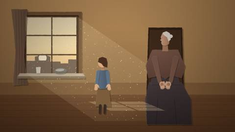
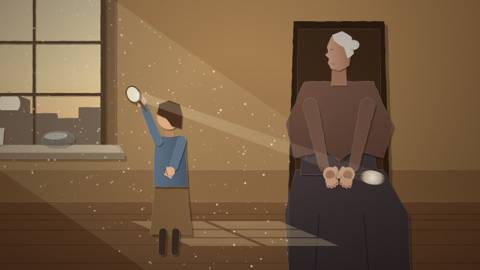
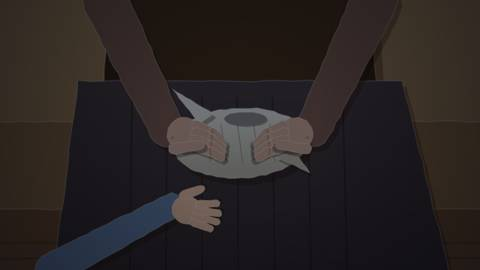
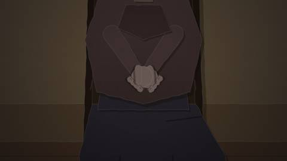
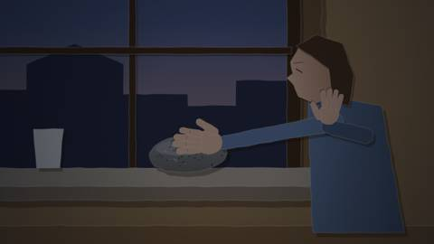

Keyframe artist · 2026-10-28 18:04 UTC · looked at 8 images
F1 Stone keyframes and refs
The prompt it was given
Build the keyframe module for AFTERLIGHT film 1, "The Stone That Remembered". Read /home/claude/afterlight/storyboard/CONTRACT.md and follow it exactly. Read the film's section, the slate table and the closing sections in /home/claude/afterlight/storyboard/treatment.txt. Write film1.js.
Context: this is for a filmmaker, Watson Hartsoe (CRASH LAB). His archive films use footage from movingimagearchive.com, and his PAELEO animation studies combine archive and cut-paper animation. Each layer is labelled PHOTOGRAPHED or INVENTED, figures are matted over plates, and captions sit on paper slips.
Suggested medium: multiplane cut paper with a warm interior, after Norstein-style layered depth. Low sun through a window and dust in the beam. The stone and the hands carry the drama. Do not make the stone glow orange to signal heat; temperature must read from hands and posture.
Suggested beats, which you may refine:
- A cold room near sunset. An older person waits with cupped hands. A stone sits on the sill in the sunbeam, visible from the first frame.
- The child angles a hand mirror. A bright patch lands beside the waiting hands.
- The sun sets and the patch vanishes. The hands are still cold.
- The child touches the sill stone, withdraws, touches it again, and recognises it.
- The child carries the stone wrapped in cloth and places it in the waiting hands, which close around it. End on the hands.
Sources to look for and verify:
- Passive-solar thermal mass, for example a Trombe wall (US DOE or NREL pages).
- Historic warming stones or soapstone bed warmers (museum objects in Smithsonian Open Access or Wikimedia).
- Archive footage of sunsets through windows, hands, hand mirrors and domestic interiors. Try Internet Archive / Prelinger and movingimagearchive.com.
- PD paintings of sunlit interiors for lighting reference, for example Vilhelm Hammershøi's interiors on Wikimedia.
Return the short report required by the contract.






What it made and reported
F1 · The Stone That Remembered: done. The module is at /home/claude/afterlight/storyboard/film1.js. node --check passes and shoot.py renders 5 canvases with no errors. The frames are film1_k1.png through film1_k5.png in the same folder.
Medium: multiplane cut paper with Norstein-style glass planes, over photographed window plates. Matte paper cannot glow, so temperature has to be shown by hands and posture. The stone stays plain speckled grey in every frame.
Keyframes:
- The cold room (t=0). Wide shot. The stone sits on the sill in the beam from the first frame, with dust in the light. The elder waits with cupped hands, and the child stands at the window.
- The borrowed patch (t=14). The child angles a hand mirror, and a bright patch lands on the elder's knee beside her hands.
- The patch goes out (t=26). Dusk. The patch is gone. The elder's hands have become fists pulled to her chest, gripping her shawl.
- Second touch (t=38). Close-up. The child's palm rests flat on the stone, the other hand is drawn back at her chest, and her face looks down at the stone.
- The hands close (t=52). The stone, wrapped in linen, is in the elder's lap. Her hands hold the bundle and the child's hand slides away. The film ends on the hands.
After the first render, frames 3 to 5 were too dark, the touch in frame 4 did not land on the stone, and the bundle in frame 5 was hidden. One fix pass corrected all three, and all five frames now read.
References: every reference was opened with WebFetch before I set verified:true. Sources used:
- Prelinger films on Internet Archive: Sleep for Health (1950, public domain), The Face in the Mirror (1940, public domain), New England: Yesterday and Today, and Hope Is in Your Hand.
- NREL "Building a Better Trombe Wall" (1998) and the DOE Consumer Guide to Passive Solar Home Design.
- Hammershøi, Dust Motes Dancing in the Sunbeams (via its Wikipedia page) and SMK KMS3696, "Interior in Strandgade, Sunlight on the Floor" (public domain per SMK's API).
- Soapstone warmers: Smithsonian NMAH 318370 (CC0), Maine Memory Network 17255, and Shaker Museum 23043.
Could not verify or fetch:
- Wikimedia Commons: every file and search page failed to fetch, so I cited the Wikipedia article and SMK open data instead.
- movingimagearchive.com: its search could not be run, from either WebFetch or curl. I confirmed that a source page for Sleep for Health exists there (public domain, links to archive.org/details/Sleepfor1950), but I could not pull a clip ID for the window shot. All footage refs therefore point to archive.org items. Shot timecodes come from the Prelinger shot lists; I did not watch the footage.
- Library of Congress: the item page (loc.gov) returned an error, so it is not used.
- No footage of a sunset seen through a domestic window: the closest are an outdoor sunset pan in New England: Yesterday and Today and a "sunlight streams through window" shot in Sleep for Health.
Rights flagged as "unknown — not granted":
- New England: Yesterday and Today and Hope Is in Your Hand: their archive.org pages state no licence.
- Maine Memory Network: the record says rights have not been evaluated.
- Shaker Museum: the page claims copyright without giving terms.
Treatment claims:
- Thermal storage: supported. NREL says masonry stores the sun's heat and releases it for hours after sunset.
- DOE guide: it defines thermal mass but does not mention Trombe walls, so the release-later claim rests on the NREL sheet.
- Stone size: a hand-sized sill stone holds heat for minutes to tens of minutes, not hours. The gap between sunset and the touch has to stay short to be honest.
-
Historic warmers: the documented soapstone warmers were heated on stoves, not by the sun. The sun-warmed stone is the film's fiction built on the same physics, and the
basisarray says so. -
The stone's "memory": the treatment already calls this a metaphor. A
basisentry markedverified:falserecords that the drama is invented.